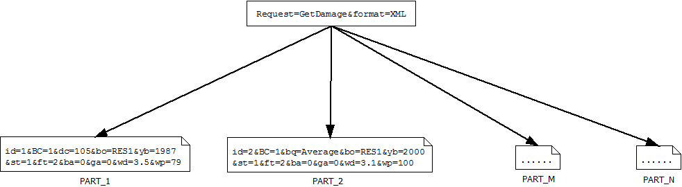

I have been recently implementing a RESTful application for Hazus Canada and I have been fascinated by the RESTful
design & compatibility elements.The following article presents the several aspects of REST and why it’s the prevailing
way of implementing orthogonal API’s.
REST Definition
REST stands for Representational State Transfer. REST is an architecture style for designing networked applications.
The idea is that, rather than using complex mechanisms such as CORBA, RPC or SOAP to connect between machines, simple
TTP is used to make calls between machines. For instance, the World Wide Web itself, based on HTTP, can be viewed as a
REST-based architecture.
REST Advantages
Platform-independent (you don't care if the server is Unix, the client is a Mac, or anything else),
It can be observer that we are making the request in a key-value pair. Consequently, the value of the Request
key is GetDamage, the wanted format is XML, the ID equals to 1 and so on. A note here would be that our URL
manages the URL as case insensitive; which makes it more “hackable” and easy to manipulate, although a
case-sensitive URL would make sense in some other applications. A more complex request:
As we can see here, we can declare multiple buildings as long as we give different ID of the type of building.
If a REST application feels logic & normal even for the end user, then it can be said that it successfully
applies the RESTful principles. Usually, RESTful URI’s can be described by a Regular Expression, as the
following (pseudo) REGEX:

As we can see, our request is split to several parts that altogether express our initial request.
Note that this isn't the request body -- it's just a URL. This URL is sent to the server using a
simpler GET request, and the HTTP reply is the raw result data -- not embedded inside anything,
just the data you need in a way you can directly use.
REST Drawbacks & Misconceptions
Programming languages are not resource oriented so the handling code that maps URIs to tends to get messy.
On the other hand it is relatively hard to make the REST API hyper-text driven (Which is a constraint of REST)
Building an implementation that is GETsful (i.e. does everything with http GET) or doing plain RPC where the
URI is the command, doing CRUD with HTTP verbs etc.; REST seems simple but it isn’t - it requires a shift in
thinking (e.g. identifying resources, externalizing the state transitions etc.). As with any
architecture/technology - a bad implementation can negate all the benefits.
There are also many discussions about REST vs SOAP vs
RPC but since I haven’t used these
concepts extensively I won’t get into detail. Some interesting articles can be found
here and here.
What really matters when building a RESTful API is having a strong and paradigm-driven documentation that will make your programmers
adopt fast and consequently love your API. Ideally, you would like to showcase your API among different environments
(MacOS, Linux, Windows etc.) and languages (C++, Java, Python etc.). This will vitally help them see what your API
does and shows that you care about your product. While implementing the Hazus API, I tried to follow these ideas in
order to make it as much user-friendly as it could get. Again, you can explain things to people in order to make them
simpler but you can’t understand it for them.